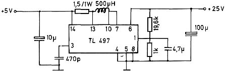
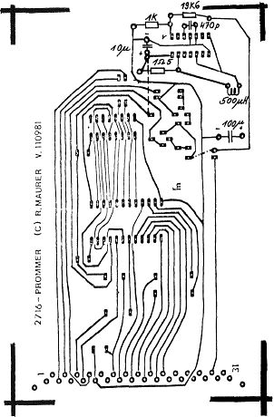

Nascom Journal |
Februar 1982 · Ausgabe 2 |
Hier ein Ergänzungsvorschlag zum Eprommer, den Rüdiger Maurer in Heft 11/12-81 vorstellte.
All diejenigen, die selbst nicht schon den 2708-Eprommer besitzen, müssen mit einem zusätzlichen Trafo, Gleichrichter und Stabilisierungsschaltung die 25V Programmierspannung erzeugen. Dazu kommt noch, daß die 25V-Leitung im PIO-Bus eine Leitung für eventuell andere Anwendung blockiert.
Diese beiden Nachteile macht ein einziges IC wett, das jederzeit noch auf der Prommer Platine Platz findet.
Mit diesem IC und ein paar Beschaltungsbauteilen wird die vorhandene 5V-Spannung auf 25V hochtransformiert. Die Beschaltung dazu zeigt Bild 1.
Bild 2 ist ein Vorschlag, wie das Layout der Ätzfolie erweitert werden könnte.
Bild 1 : Beschaltung des TL 497
Bild 2: Erweitertes Platinen-Layout (Lötseite)

Der Preis für das IC (TL 497 von Texas) beträgt ca. 5.–DM (z.B. bei Fa Frank/ Nürnberg). Dies ist also eine echte Alternative zur herkömmlichen Methode mit Trafo.
Literatur: Manual ECB 85
| Seite 8 von 32 |
|---|